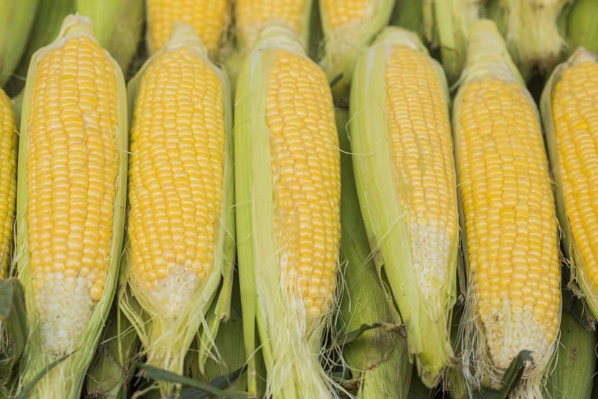

Welcome to Andrew's Orchard
Call Now - Enjoy Locally Grown Fruits & Veggies
Fresh Fruit

The fruit that we offer at Andrew's Orchard is fresh, juicy and delicious. We have a wide selection of fruit available, such as apples, pears, strawberries and blueberries.
The fruit that we offer at Andrew's Orchard is fresh, juicy and delicious. We have a wide selection of fruit available, such as apples, pears, strawberries and blueberries. All of our fruit is grown using organic practices, which means no harmful chemicals or chemical fertilizers are used in the growing process. We also use sustainable methods to ensure that our fruit is harvested in its peak season for maximum flavor and nutrition. Our fruit comes straight from the farm to your table - full of vitality and flavors! Come visit us today to sample some of Manitoba's finest fruit!
Fresh Veggies
The vegetables available at Andrew's Orchard are freshly picked from our gardens to provide maximum flavor and nutrition.
The vegetables available at Andrew's Orchard are freshly picked from our gardens to provide maximum flavor and nutrition. Our vegetables include root vegetables such as potatoes, carrots and beets, as well as green vegetables such as broccoli, cauliflower, kale and spinach. All of our vegetables are grown using sustainable farming methods to ensure the highest quality vegetables for your table. Visit us today to try some of Manitoba's best vegetables!